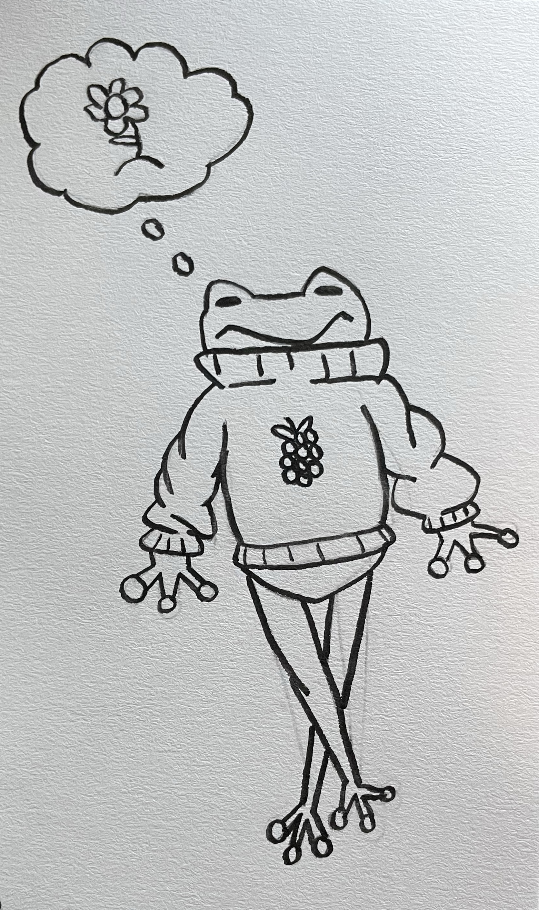
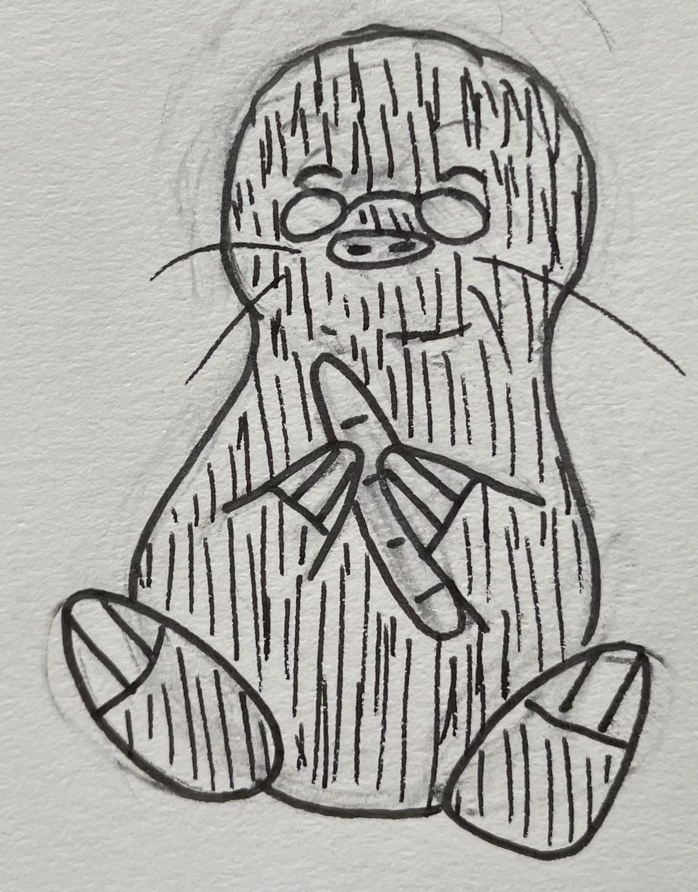

One day, Flora decided she wanted to collect some wild daisies for her shop. And so, she decided to head out to the forest and look for some.
While out in the forest, Flora met Milo, a mole. He talked about how he was a baker, and he was also looking for daisies. The two decide to work together to find the flowers.
 Page 3.